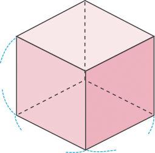
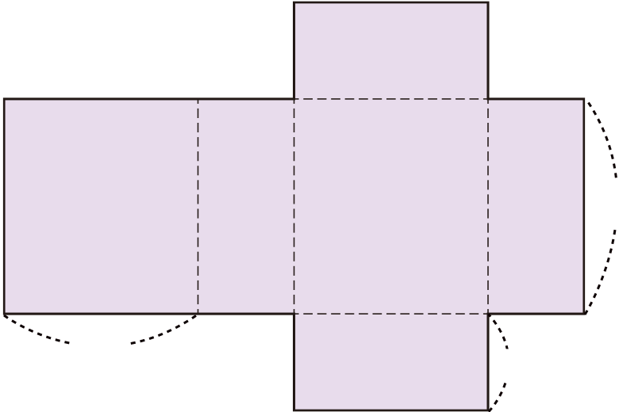
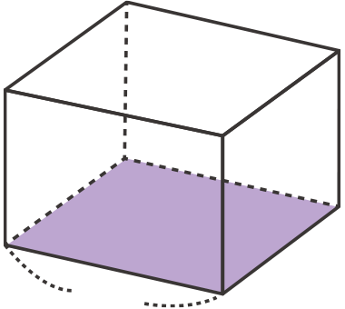

- 문제 1
- 문제 2
- 문제 3
- 문제 4
- 문제 5
-
직육면체의 겉넓이를 구하시오.
5 cm4 cm3 cm- 식
-
예(5×4＋4×3＋5×3)×2＝94
- 답
-
94cm2
-
정육면체의 겉넓이를 구하시오.
4 cm4 cm4 cm- 식
-
예4×4×6＝96
- 답
-
96cm2
-
다음 전개도를 이용하여 정육면체를 만들었습니다. 만든 정육면체의 겉넓이는 몇 cm2일까요?
3 cm54cm2 -
다음 전개도를 이용하여 만든 직육면체의 겉넓이는 몇 cm2일까요?
9 cm9 cm3 cm270cm2 -
직육면체에서 색칠한 면의 넓이는 54 cm2이고, 밑면의 가로는 9 cm입니다. 이 직육면체의 높이가 7 cm라면 겉넓이는 몇 cm2일까요?
9 cm318cm2